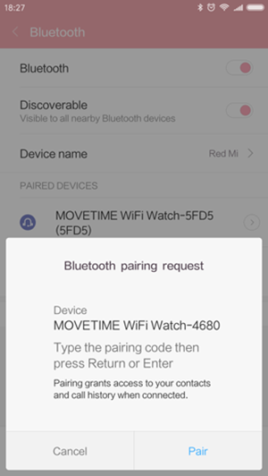

Häufig gestellte Fragen zur WLAN-Uhr
Was kann ich tun, wenn auf meiner Uhr keine Anrufe eingehen und ich keine Anrufe über die Uhr tätigen kann?
- Stellen Sie sicher, dass die Verbindung zwischen der Uhr und dem Gerät ordnungsgemäß funktioniert.
- Stellen Sie sicher, dass die Uhr nicht zu weit vom Gerät entfernt ist.
- Berühren Sie in den Einstellungen der Uhr
, um die Funktion einzuschalten, und berühren Sie dann auf dem Telefon auf der Seite zur Bluetooth-Kopplung die Option Koppeln, um die Geräte miteinander zu verbinden.
Auf Android-Geräten erscheint nach der Bestätigung das Bluetooth-Symbol
. Dann können Sie Anrufe tätigen und empfangen.
Bei iOS-Geräten sind auf der Kopplungsseite des Telefons zwei identische Bluetooth-IDs zu sehen, falls das BLE- und das Freisprechprofil (für Bluetooth-Anrufe) bereit sind.

Die MOVETIME-Smartwatch wird nicht erkannt.
- Aktivieren Sie Bluetooth, falls Bluetooth deaktiviert ist.
- Aktivieren Sie Bluetooth, um nach Geräten zu suchen.
- Starten Sie die Smartwatch oder das Telefon neu, falls Bluetooth zwar eingeschaltet ist, das Koppeln aber weiterhin nicht funktioniert.
- Setzen Sie die Smartwatch zurück oder entfernen Sie die gekoppelte Uhr aus der MOVETIME-App und aus der Bluetooth-Übersicht auf dem Telefon, falls die Smartwatch mit einem anderen Telefon gekoppelt wurde.
Wie erhalte ich möglichst genaue Ergebnisse bei der Messung der Herzfrequenz?
Tragen Sie die Uhr zum Erzielen möglichst genauer Ergebnisse fest am Handgelenk. Selbst unter idealen Bedingungen kann die Uhr möglicherweise keine zuverlässigen Herzfrequenzmessungen liefern. Bei einem geringen Prozentsatz von Nutzern führen unterschiedliche Faktoren dazu, dass die Herzfrequenz nicht erfasst werden kann. Beachten Sie Folgendes, um einen möglichst realistischen Messwert für Ihre Herzfrequenz zu erhalten:
- Die Rückseite der Uhr muss Ihre Haut berühren.
- Die Uhr sollte zwar nicht zu locker am Handgelenk getragen werden, allerdings sollte sie auch nicht zu fest auf der Haut sitzen, damit die Sensoren richtig messen können.
- Ziehen Sie die Uhr beim Work-out beispielsweise enger und lockern Sie sie anschließend wieder.
- Die Sensoren funktionieren nur, wenn Sie die Uhr oberhalb des Handgelenks tragen.
Falls die Uhr hin und her rutscht oder die Herzfrequenz nicht gemessen werden kann, verkürzen Sie das Band ein kleines Stück. Die Uhr sollte eng, aber dennoch bequem sitzen.

Was kann ich tun, wenn meine Uhr nicht reagiert?
Halten Sie die Ein/Aus-Taste 8 Sekunden gedrückt, um die Uhr neu zu starten. Diese Vorgehensweise sollte allerdings nur im Notfall genutzt werden.
Warum vibriert meine Uhr gelegentlich unerwartet?
- Überprüfen Sie, ob Sie eine Benachrichtigung erhalten haben.
- Stellen Sie sicher, dass die Uhr nicht zu weit vom Gerät entfernt ist.
Was kann ich tun, wenn die Vibration nicht funktioniert?
- Laden Sie die Uhr auf bzw. stellen Sie sicher, dass der Akku nicht entladen ist.
- Stellen Sie sicher, dass die Verbindung zwischen der Uhr und dem Gerät nicht unterbrochen ist.
Was kann ich tun, wenn meine Uhr nicht geladen wird?
- Stellen Sie sicher, dass die Kontakte der Ladestation richtig auf die Kontakte an der hinteren Abdeckung der Watch ausgerichtet sind.
- Das USB-Kabel muss fest am USB-Anschluss eingesteckt sein.
- Falls der Akku der Uhr vollständig entladen ist, dauert es kurze Zeit, bis ausreichend Akkuladung verfügbar ist und das System wieder aktiviert wird.
Warum steigt der Akkuverbrauch nach der Installation der MOVETIME-App und beim Verbinden der Uhr mit meinem Gerät?
Das ist normal. Der erhöhte Akkuverbrauch hat folgende Ursachen:
- Aufrechterhaltung der Verbindung zwischen Uhr und Telefon.
- Dateiübertragung zwischen Uhr und Telefon.
- Verbindungstrennung, Gerätesuche und erneute Verbindungsherstellung.
Wie viele BT 4.0 Low Energy (BLE)-Geräte können maximal mit meinem Gerät verbunden werden?
Es kann jeweils nur ein BLE-Gerät mit dem Gerät verbunden werden.
Was kann ich tun, wenn die Verbindung zwischen der Uhr und dem Gerät häufig getrennt wird?
- Stellen Sie sicher, dass die MOVETIME-App nicht vom System beendet wird. Sollte die App beendet worden sein, starten Sie sie neu.
- Stellen Sie sicher, dass die Kommunikation zwischen der Uhr und dem Gerät ordnungsgemäß funktioniert.
a) Überprüfen Sie die MOVETIME-App auf Ihrem Telefon. Wenn die Uhr mit Ihrem Gerät verbunden ist, erscheint oben rechts das Symbol. Besteht keine Verbindung zur Uhr, ändert sich
in der Mitte des Symbols zu
.
b) Wird das Bluetooth-Symbolauf der Uhr angezeigt, bedeutet das, dass die Uhr nicht mit Ihrem Gerät gekoppelt werden konnte.

Wie kann ich die Uhr auf die Werkseinstellungen zurücksetzen?
- Sollten Sie das Problem mit den oben genannten Antworten nicht lösen können, setzen Sie Ihre Uhr zurück.
- Berühren Sie in der MOVETIME-App
und anschließend Uhr > Einstellungen > Auf Werkszustand zurücksetzen, um Ihre Uhr zurückzusetzen.
- Halten Sie die Ein/Aus-Taste 10 Sekunden gedrückt, um die Uhr zurückzusetzen.
Was kann ich tun, wenn auf meiner Uhr keine Benachrichtigungen eingehen?
Führen Sie folgende Schritte aus, damit Ihre Uhr Benachrichtigungen von MOVETIME empfängt.
- Aktivieren Sie in der MOVETIME-App unter Uhr > Benachrichtigungen die Benachrichtigungen für bestimmte Apps.
- Konfigurieren Sie die MOVETIME-App so, dass sie automatisch gestartet wird, sobald Sie das Telefon einschalten.
- Fügen Sie die MOVETIME-App der weißen Liste oder der Liste der geschützten Apps hinzu.
- Deaktivieren Sie ggf. Energiespareinstellungen, durch die die App deaktiviert wird, wenn der Bildschirm gesperrt ist.
- Rufen Sie Einstellungen > Benachrichtigungen > Benachrichtigungszugriff > MOVETIME auf. (Je nach Gerät weichen die Namen der Optionen ab.) Deaktivieren Sie dort die MOVETIME-Benachrichtigungen und aktivieren Sie sie anschließend wieder.
- Starten Sie Ihr Smartphone neu.
Wie überwache ich meinen Schlaf?
Tragen Sie die Uhr, während Sie schlafen, und stellen Sie sicher, dass sie eingeschaltet und der Akku ausreichend geladen ist.
Was kann ich tun, wenn auf meiner Uhr ein Problem mit der WLAN-Authentifizierung auftritt?
Berühren und halten Sie eine Stelle auf dem Display, um ein Pop-up-Fenster zu öffnen. Entfernen Sie dort das aktuelle WLAN. Berühren Sie dann das gewünschte WLAN und geben Sie auf dem Telefon den richtigen Code ein.